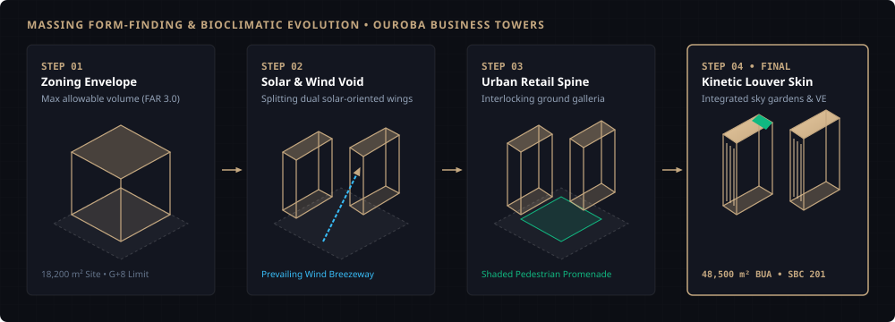

Ouroba Business Towers

Urban & Setback Envelope
Governed under Riyadh municipal commercial bylaws. Calibrated building setbacks to buffer high-velocity traffic along Al-Ouroba corridor while securing dedicated ingress/egress slip lanes.
Massing Morphogenesis
Dual-tower massing rotated to minimize western solar exposure. Central courtyard acts as an aerodynamic wind-funnel, enhancing ground-level pedestrian comfort through shaded microclimates.
SBC 201 & 801 Compliance
Full life safety egress calculations, dual pressurized fire stairs, and vertical smoke extraction shafts designed to meet stringent Civil Defense (Salamah) first-pass criteria.
Tectonic Materiality
Value Engineering workshop on the stone facade system: transitioned from wet-fix to an engineered ventilated rainscreen bracket system, yielding a 14% cost reduction while improving thermal insulation.
